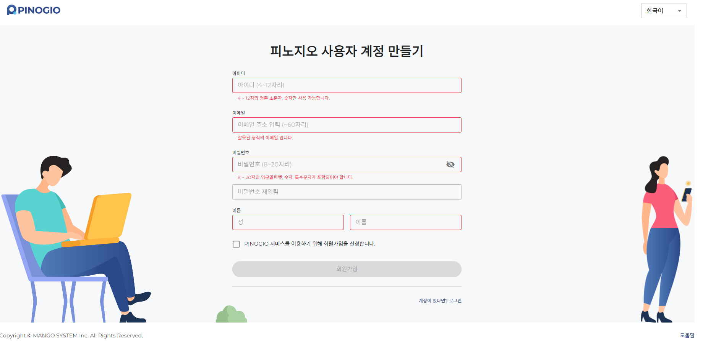

접속하기
PINOGIO Platform 은 독립형 서버, 프라이빗 또는 퍼블릭 클라우드 서버에 설치 및 운영이 가능하며, 기관별/조직/부서별 프로젝트 및 사용자 관리가 가능합니다
로그인

아이디 또는 이메일 : PINOGIO 에 가입한 ID 또는 이메일을 입력합니다.
비밀번호 : PINOGIO 가입할 때 기입한 비밀번호를 입력합니다.
참고
아이디 생성하려면 “아직 계정이 없습니까? 여기에서 가입하십시오.” 문구를 클릭하세요. 이후 아래 회원가입을 참조하세요.
경고
비밀번호를 분실하였다면 관리자에게 문의해주세요. 관리자가 회원가입 시 등록한 이메일로 임시 비밀번호를 보내드립니다.
회원가입
PINOGIO 회원가입 양식입니다.
아이디 : 회원 아이디입니다. 4~12자리의 영문소문자, 숫자만 사용가능합니다.
이메일 : 회원 이메일입니다. 차후 비밀번호 찾기 시 입력한 이메일로 발송되니 유효한 이메일을 입력해주세요.
비밀번호 : 회원 비밀번호입니다. 8~20자리의 영문알파벳, 숫자, 특수문자가 포함되어야합니다.
비밀번호 재입력 : 위에서 입력한 비밀번호를 동일하게 입력해주세요.
이름 : 회원 이름입니다.